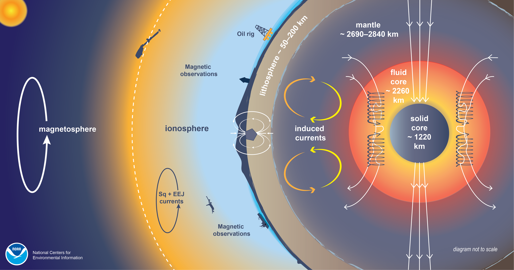

Key Concepts
3. Earth’s Magnetic Field
Earth’s magnetic field is a complex, dynamic system that results from the superposition of magnetic fields originating from multiple sources. Understanding this complex environmental variable is crucial for comprehending how animals use magnetic data for navigation. The total magnetic field at any location and time results from the combination of three primary components, each with different characteristics, spatial patterns, and temporal behaviors³⁴.
Core Field: The dominant contributor to Earth’s magnetic field is the core field, generated by the geodynamo mechanism operating within Earth’s outer liquid core. This field arises from the motion of electrically conductive molten iron as it circulates within the outer core, driven by thermal convection and the planet’s rotation. The core field exhibits a broadly dipolar structure on large scales, resembling that of a giant bar magnet tilted approximately 11 degrees from Earth’s rotational axis. However, this apparent simplicity masks considerable complexity in the detailed structure, with significant non-dipolar components that create regional variations in field strength and direction across the globe.
The core field dominates the total magnetic field at Earth’s surface, typically contributing over 98% of the field strength at any location. This field undergoes gradual changes over time scales of years to decades, known as secular variation, as the circulation patterns within the outer core evolve. These long-term changes can amount to tens of nanoTesla per year at any given location, representing a slow but persistent evolution of the magnetic environment that animals experience.
Lithospheric Field: The lithospheric or crustal field originates from the magnetic properties of rocks within Earth’s crust. Certain minerals, particularly magnetite and other iron-bearing compounds, became magnetized when they formed and retain this magnetization over geological time scales. The lithospheric field creates local and regional magnetic anomalies - areas where the magnetic field strength or direction differs noticeably from what would be expected from the core field alone.
These magnetic anomalies can range from subtle variations of a few nanoTesla to dramatic variations of thousands of nanoTesla over distances of kilometers to hundreds of kilometers. The lithospheric field is considered essentially static over time periods relevant to animal lifespans, changing only over geological time scales of millennia or longer. For migratory animals, these crustal magnetic signatures provide potentially stable, location-specific magnetic features that could serve as magnetic landmarks or components of magnetic maps.
External Fields: External magnetic fields result from electrical current systems flowing in Earth’s ionosphere and magnetosphere, driven by interactions between the solar wind and Earth’s magnetic field. These fields exhibit the most dynamic behavior of the three components, varying on time scales from seconds to days. The external field contributions include both regular, predictable daily variations and irregular disturbances associated with space weather events.
The regular daily variations, known as Sq (solar quiet) currents, result from the regular heating of the ionosphere by solar radiation, which creates predictable current systems that vary with local time and season. These regular variations typically amount to 20-30 nanoTesla at mid-latitudes but can be significantly larger at high latitudes near the magnetic poles.
Figure 1 showing magnetic field components and coordinate system, NOOA, https://www.ncei.noaa.gov/news/HDGM
Magnetic Field Measurements and Coordinate Systems
Scientists measure Earth’s magnetic field using a standardized coordinate system that allows for consistent description and comparison of magnetic field vectors worldwide. The magnetic field vector B is decomposed into components using the North-East-Centre (NEC) coordinate system, also known as the local geodetic coordinate system.
In this system, measurements are made relative to the local geographic reference frame at each point on Earth’s surface. The North component points toward geographic north (true north), the East component points toward geographic east, and the Centre component points radially downward toward Earth’s center. This coordinate system provides a consistent framework for describing magnetic field variations across the globe and through time.
From these three orthogonal components, several important magnetic field parameters are derived:
Intensity (F): The magnitude or total strength of the magnetic field vector B, representing the length of the vector in three-dimensional space
Inclination (I): The angle between the magnetic field vector B and its horizontal component H, measuring how steeply the field lines plunge into or emerge from Earth
Declination (D): The angle between the horizontal component H and geographic north, indicating how much magnetic north deviates from geographic north
Horizontal component (H): The horizontal projection of the magnetic field vector, representing the component parallel to Earth’s surface
These parameters provide different types of information that animals might potentially use for navigation. Intensity varies systematically with latitude and can provide positional information, while inclination also varies predictably with latitude and could serve as a magnetic latitude indicator. Declination provides information about magnetic versus geographic north, potentially useful for compass orientation.
4. Spatial and Temporal Variation
Global Spatial Patterns
Intensity: The total magnetic field intensity shows global patterns that reflects the underlying dipolar structure of the core field. At the magnetic equators, where the field lines run horizontally, the total intensity reaches its minimum values of approximately 23,000 nanoTesla. Moving toward higher magnetic latitudes, the field intensity gradually increases as the field lines become more vertical, reaching maximum values of approximately 62,000 nanoTesla near the magnetic poles.
This variation in intensity with magnetic latitude creates what researchers term “isodynamic lines” - contours of equal magnetic intensity that generally run east-west but show considerable deviation from simple latitudinal bands due to non-dipolar components of the field. These intensity gradients are steep enough that animals traveling north-south distances of hundreds of kilometers would encounter measurable changes in field intensity.
Inclination: Magnetic inclination, the angle at which field lines plunge into Earth, provides perhaps the most systematic navigational cue available from the geomagnetic field. At the magnetic equator, field lines run horizontally, giving inclination values near zero degrees. Moving toward the magnetic poles, inclination increases progressively, reaching 90 degrees (vertical) at the magnetic poles themselves.
This relationship between inclination and magnetic latitude has led researchers to propose that inclination serves as a primary magnetic coordinate for animal navigation. The inclination gradient is steep enough that latitudinal movements of tens of kilometers produce detectable changes in inclination angle, potentially providing fine-scale positional information.
Declination: Magnetic declination on the other side, the deviation of magnetic north from geographic north, shows the most complex spatial patterns of the major magnetic field components. Unlike intensity and inclination, declination does not follow simple latitudinal patterns but instead shows regional variations that reflect the non-dipolar components of the core field and crustal magnetic anomalies.
In some regions, declination changes very gradually over large distances, while in other areas it can change by several degrees over distances of hundreds of kilometers. These declination patterns create distinctive regional magnetic signatures that could potentially serve as magnetic landmarks for animal navigation systems.

Temporal Variations
The temporal behavior of Earth’s magnetic field spans an enormous range of time scales, from rapid variations lasting seconds to gradual changes occurring over geological time. Understanding these temporal variations is crucial for reading how animals use magnetic data for navigation.
Quiet-Time Variations: Even during geomagnetically quiet periods, Earth’s magnetic field shows regular daily variations driven by solar heating of the ionosphere. During daylight hours, solar ultraviolet radiation ionizes atmospheric gases, creating electrical conductivity that allows current systems to flow in the ionosphere. These currents generate magnetic fields that add to the main field measured at Earth’s surface.
The amplitude of these quiet-time variations depends strongly on latitude and local time. At mid-latitudes, typical daily variations amount to approximately 20 nanoTesla, with maximum variations occurring during local noon when ionospheric currents are strongest. At polar latitudes, where ionospheric current systems are more complex, daily variations can reach 100 nanoTesla or more.
These regular variations follow predictable patterns that repeat daily and show seasonal modulations. For animals using magnetic cues for navigation, these predictable variations might either be filtered out by their sensory systems or potentially used as additional timing information.
Geomagnetic Storm Disturbances: During periods of enhanced solar activity, Earth’s magnetic field can experience big disturbances that far exceed normal quiet-time variations. Geomagnetic storms occur when disturbances in the solar wind create enhanced coupling between the solar wind’s magnetic field and Earth’s magnetosphere. These events drive intense electrical currents in the magnetosphere and ionosphere, creating magnetic field variations that can exceed 1000 nanoTesla in polar regions and 250 nanoTesla at mid-latitudes²³.
The temporal characteristics of geomagnetic storms are particularly relevant for animal navigation. Storm-related magnetic field changes can occur within seconds to days, creating rapid alterations in the magnetic environment that animals experience. The magnitude of these changes often exceeds the established sensitivity thresholds of animal magnetoreceptors by factors of ten or more, suggesting that geomagnetic storms could significantly disrupt magnetic navigation systems.
Secular Variation: On longer time scales, Earth’s magnetic field undergoes continuous slow changes known as secular variation, driven by evolving circulation patterns within the liquid outer core. These changes typically amount to tens of nanoTesla per year at any given location, representing a gradual evolution of the magnetic field over time scales of years to decades.
For long-lived migratory animals or populations with strong site fidelity, secular variation could potentially require periodic recalibration of magnetic navigation systems. However, the slow rate of secular variation means that it is unlikely to affect navigation during individual migratory journeys, which typically last weeks to months.
5. Geomagnetic Storms and Solar Wind
6. Geomagnetic Data Sources
Terrestrial Observatory Networks
The systematic measurement of Earth’s magnetic field began in the 1830s and has evolved into a sophisticated global network of ground-based observatories that provide continuous, high-precision magnetic field measurements.
INTERMAGNET Network: The International Real-time Magnetic Observatory Network (INTERMAGNET) represents the primary source of ground-based geomagnetic data, currently comprising 152 observatories distributed across the globe³⁷. These observatories employ standardized instrumentation and data collection procedures to ensure consistency and comparability of measurements worldwide.
Each INTERMAGNET observatory typically operates multiple magnetometers, including absolute instruments that measure the true magnetic field vector and variometers that detect changes in the field with high temporal resolution. The observatories record magnetic field measurements continuously, typically at one-second or one-minute intervals, creating detailed time series that capture both gradual changes and rapid fluctuations.
Advantages of Terrestrial Measurements: Ground-based observatories offer several significant advantages for magnetic field research. Their calibration accuracy is exceptionally high, with measurement uncertainties typically less than 1 nanoTesla for carefully maintained instruments. The continuous operation of these stations creates long-term data records, some extending back more than a century, that are invaluable for studying secular variation and long-term magnetic field changes.
The temporal resolution of ground-based measurements is also superior to satellite data, with one-second sampling rates that can capture rapid magnetic field fluctuations associated with geomagnetic storms and other space weather events. This high temporal resolution makes ground-based data particularly valuable for studying the detailed time evolution of magnetic disturbances.
Limitations of Ground-Based Networks: Despite their high accuracy and temporal resolution, terrestrial magnetic observatories have significant limitations for global magnetic field studies. The spatial coverage is highly irregular, with dense networks in some regions (particularly northern and western Europe) but sparse or absent coverage in others. Oceanic regions are particularly poorly covered, with very few magnetic observatories on islands and none on the open ocean.
The effective spatial coverage of each observatory is limited to approximately 1000 kilometers, beyond which local magnetic variations can differ significantly from those measured at the observatory. This limitation means that only regions with dense observatory networks provide complete spatial coverage, excluding most animal migration pathways that cross oceanic or remote continental regions.
Temporal data availability also presents challenges for real-time applications. Observatories submit their data to the central INTERMAGNET network at different times, often with delays of months to years for the highest quality, fully processed data. Some observatories occasionally cease operation due to funding or technical issues, creating gaps in temporal coverage.
Satellite-Based Measurements
Satellite missions have revolutionized geomagnetic field research by providing consistent global coverage with standardized instrumentation. Over the past 60 years, a series of dedicated magnetic field missions has complemented terrestrial measurements and enabled global-scale studies of magnetic field structure and dynamics.
Historical Satellite Missions: The evolution of satellite-based geomagnetism began with early missions such as POGO (1965-1971), which provided the first global magnetic field measurements from space. Subsequent missions including Magsat (1979-80), Ørsted (1999-present), CHAMP (2000-2010), and SAC-C (2000-present) progressively improved measurement accuracy and global coverage³⁸.
Each mission contributed unique capabilities and extended the temporal baseline of satellite magnetic measurements. Magsat provided the first high-precision global magnetic field model, while Ørsted began the era of continuous, long-term satellite magnetic monitoring. CHAMP delivered exceptionally precise measurements that advanced understanding of both the main field and its temporal variations.
The Swarm Mission: The European Space Agency’s Swarm mission, launched in 2013, represents the current state-of-the-art in satellite-based magnetic field measurement³⁹. The mission employs three identical satellites arranged in a carefully designed constellation that provides enhanced spatial and temporal sampling of the global magnetic field.
The constellation consists of satellites Alpha and Charlie, which orbit in parallel at an altitude of 480 kilometers with a separation of approximately 150 kilometers at the equator. Satellite Bravo orbits at a higher altitude of 510 kilometers in a different orbital plane that, at present, is nearly perpendicular to the Alpha-Charlie pair. This configuration provides measurements at two different altitudes and enables separation of different magnetic field sources.
Swarm Instrumentation: Each Swarm satellite carries identical scientific instrumentation designed for precise magnetic field measurement. The primary instruments include an Absolute Scalar Magnetometer (ASM) that measures the total magnetic field intensity, a Vector Field Magnetometer (VFM) that measures the three-component magnetic field vector, and a GPS receiver for precise orbit determination.
The VFM provides magnetic field measurements at 1 Hz resolution in the North-East-Centre coordinate system, calibrated using measurements from the ASM and stellar cameras that determine satellite orientation. This combination of instruments enables precise determination of both the magnitude and direction of the magnetic field vector at satellite altitude.
Advantages of Satellite Measurements: Satellite measurements resolve many of the limitations of ground-based networks by providing consistent global coverage with standardized instrumentation. The polar-orbiting design of most magnetic field satellites ensures complete global coverage within a few days, including oceanic and remote continental regions that lack ground-based observatories.
Satellite data are typically available within days to weeks of collection, much faster than the fully processed data from many ground-based observatories. The standardized instrumentation and data processing procedures also ensure consistency in measurements across different geographic regions and time periods.
The orbital perspective of satellites enables measurement of the magnetic field above most ionospheric current systems, providing information about magnetic field sources that cannot be obtained from ground-based measurements alone. This capability is particularly valuable for studying external field variations and their global patterns.
Satellite Data Access and Formats: Swarm data are made freely available through the European Space Agency’s Earth Observation Policy, with data access provided through the VirES (Virtual workspace for Earth observation Scientists) web platform⁴⁸. The Level 1b data products provide corrected and calibrated magnetic field measurements in standard scientific formats.
However, satellite magnetic data are provided in specialized formats such as the Common Data Format (CDF) developed by NASA⁴³, which are not readily accessible using standard ecological data analysis software. This technical barrier has historically limited the use of satellite magnetic data outside the specialized geophysics community, despite the open data policies of space agencies.
Geomagnetic Indices and Activity Monitoring
Understanding and quantifying the level of geomagnetic activity is crucial for both space weather applications and studies of magnetic field effects on biological systems. Geomagnetic indices provide standardized measures of magnetic field disturbance that enable comparison of activity levels across different times and locations.
K-Index System: The K-index represents the fundamental unit for measuring local geomagnetic disturbance. Calculated every three hours at individual magnetic observatories, the K-index quantifies disturbances in the horizontal component of the magnetic field on a quasi-logarithmic scale from 0 to 9²⁶. A K-index of 0 indicates perfectly calm magnetic conditions, while values of 5 or higher indicate geomagnetic storm conditions.
The K-index calculation involves comparing the observed magnetic field variations during each three-hour period to the expected quiet-day variation for that location and season. This approach accounts for the regular daily variations in the magnetic field and highlights unusual disturbances that exceed normal quiet-time levels.
Kp Index: The planetary Kp index provides a global measure of geomagnetic activity by averaging K-indices from a standardized network of magnetic observatories distributed worldwide³⁵. Calculated every three hours, the Kp index ranges from 0 to 9 and serves as a proxy for the energy input from the solar wind into Earth’s magnetosphere.
The Kp index is widely used in space weather applications and research studies because it provides a single number that characterizes global magnetic activity levels. Kp values of 5 or higher indicate geomagnetic storm conditions, with values above 7 representing severe storms that can have significant technological and potentially biological impacts.
References
Deutschlander ME, Beason RC. Avian navigation and geographic positioning. J Field Ornithol. 2014;85(2):111–33.
Holland RA. True navigation in birds: from quantum physics to global migration. J Zool. 2014;293:1–15.
Mouritsen H. Long-distance navigation and magnetoreception in migratory animals. Nature. 2018;558:50–9.
Chernetsov N. Compass systems. J Comp Physiol A. 2017;203:447–53.
Gagliardo A. Forty years of olfactory navigation in birds. J Exp Biol. 2013;216:2165–71.
Bonadonna F, Gagliardo A. Not only pigeons: avian olfactory navigation studied by satellite telemetry. Ethol Ecol Evol. 2021.
Wiltschko R, Wiltschko W. Avian navigation: a combination of innate and learned mechanisms. Adv Study Behav. 2015;47:229–310.
Lohmann KJ, Lohmann CMF, Putman NF. Magnetic maps in animals: nature’s GPS. J Exp Biol. 2007;210:3697–705.
Naisbett-Jones LC, Putman NF, Stephenson JF, Ladak S, Young KA. A magnetic map leads juvenile European eels to the Gulf Stream. Curr Biol. 2017;27:1236–40.
Brothers JR, Lohmann KJ. Evidence that magnetic navigation and geomagnetic imprinting shape spatial genetic variation in sea turtles. Curr Biol. 2018;28:1325–9.
Burda H, Begall S, Hart V, Malkemper EP, Painter MS, Phillips JB. Magnetoreception in mammals. In: Fritzsch B, editor. The senses: a comprehensive reference (second edition): Elsevier; 2020. p. 421–44.
Genzel D, Yovel Y, Yartsev MM. Neuroethology of bat navigation. Curr Biol. 2018;28(17):R997–R1004.
Granger J, Walkowicz L, Fitak R, Johnsen S. Gray whales strand more often on days with increased levels of atmospheric radio-frequency noise. Curr Biol. 2020;30(4):R155–6.
Vanselow H, Jacobsen S, Hall C, Garthe S. Solar storms may trigger sperm whale strandings: explanation approaches for multiple strandings in the North Sea in 2016. Int J Astrobiol. 2017;17(4):336–44.
Kishkinev D, Chernetsov N, Pakhomov A, Heyers D, Mouritsen H. Eurasian reed warblers compensate for virtual magnetic displacement. Curr Biol. 2015;25(19):822–4.
Kishkinev D, Packmor F, Zeichmeister T, Winkler H-C, Chernetsov N, Mourisen H, et al. Navigation by extrapolation of geomagnetic cues in a migratory songbird. Curr Biol. 2021;31(7):1563–9.
Pakhomov A, Anashina A, Heyers D, Kobylkov D, Mourtisen D, Chernetsov N. Magnetic map navigation in a migratory songbird requires trigeminal input. Nat Sci Rep. 2018;8:11975.
Wikelski M, Arriero E, Gagliardo A, Holland RA, Huttunen MJ, Juvaste R, et al. True navigation in migrating gulls requires intact olfactory nerves. Nat Sci Rep. 2015;5:17061.
Bowlin MS, Bisson I-A, Shamoun-Baranes J, Reichard JD, Sapir N, Marra PP, et al. Grand challenges in migration biology. Integr Comp Biol. 2010;50(3